카드 순서
- 첫인상 별점과 가벼운 첫 반응
- 밑줄 각자 고른 문장 낭독
- 해석 "왜 그랬을까"
- 입장 공감한다 / 공감하기 어렵다
- 연결 나라면, 내 경험
- 마무리 별점 다시, 한 줄 남기기
사용 가이드
느릿느릿, 한 달에 한 권.
친구들과 같이 읽고, 만나서 이야기하는 작은 독서 모임 앱이에요.
책 한 권이 한 바퀴예요. 토론이 끝나면 다음 친구 차례로 넘어가요.
책 고르는 순번은 돌아가요. 내 차례가 되면 도서관 화면에 책 등록 칸이 나타나요.
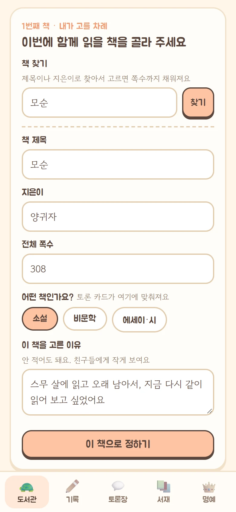
달력에서 모일 수 있는 날을 전부 누르고 확정해요.
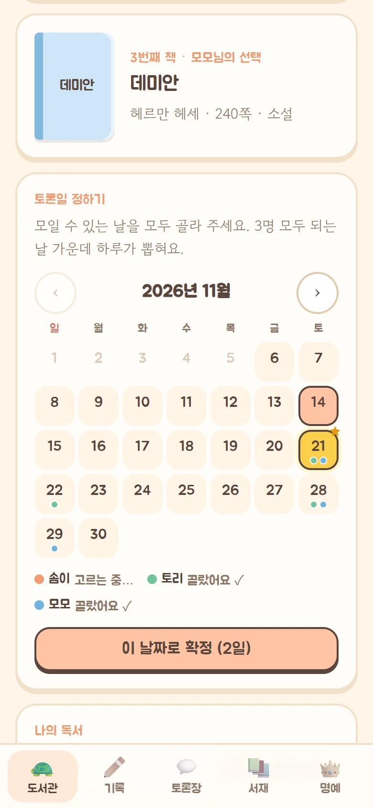
도서관 맨 위에 각자 읽은 쪽수가 보이고, 캐릭터들이 도서관을 돌아다녀요.
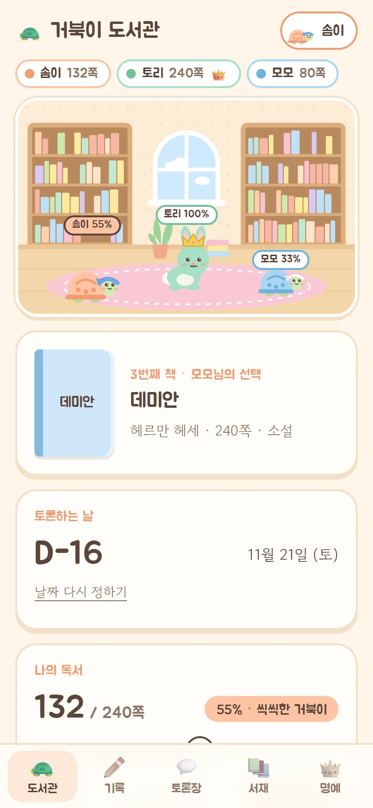
토론 당일에는 도서관 화면에 "토론장 들어가기"가 뜨고, 가려져 있던 친구들의 기록도 모두 열려요.
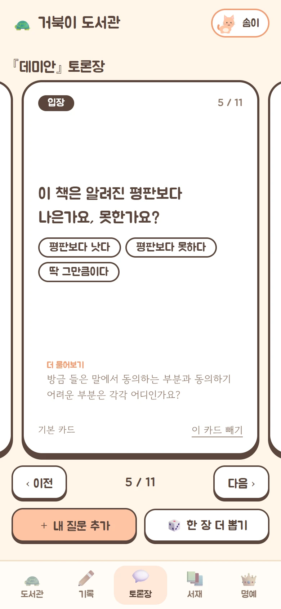
토론 다음 날 누군가 앱을 열면 자동으로 정리돼요.
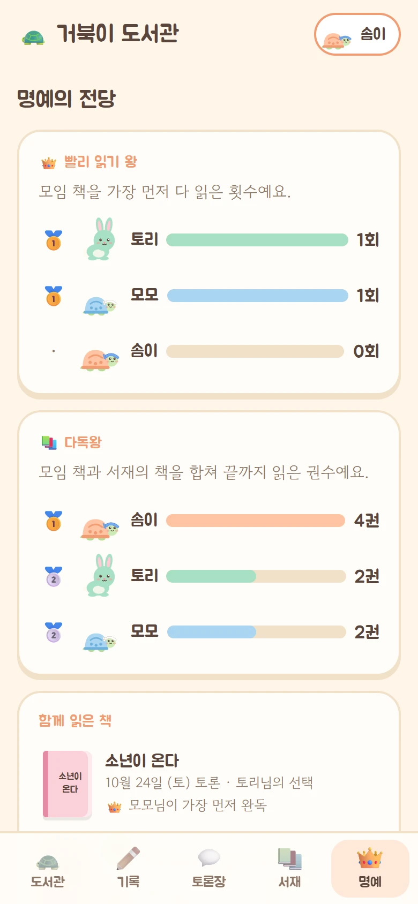
처음엔 느릿느릿 미니미 거북이. 읽을수록 몸이 자라고 머리띠 색이 바뀌다가, 다 읽으면 깡충깡충 토끼가 돼요.
그 책을 가장 먼저 끝까지 읽은 친구의 머리에 왕관이 올라가요. 책이 바뀌면 왕관도 다시 비어요.
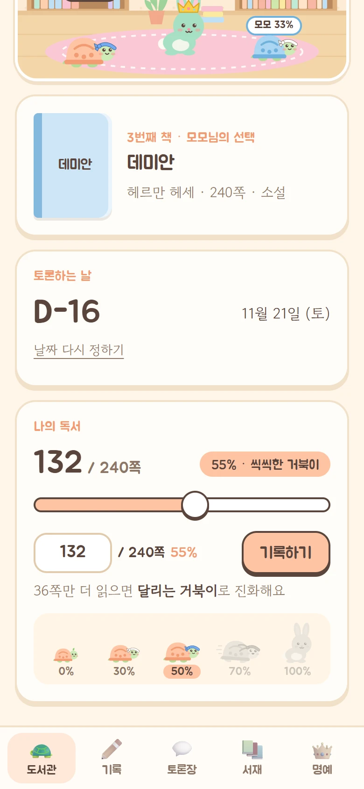
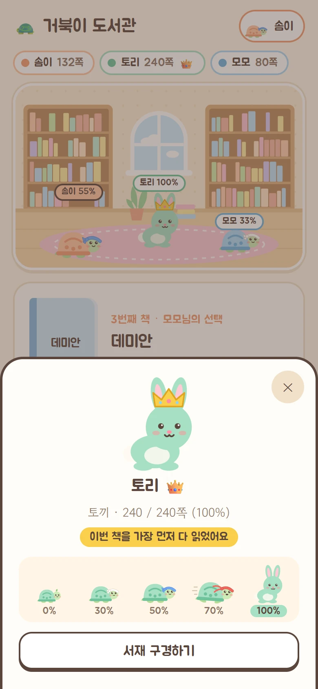
기록 탭에서 이번 책에 대한 생각을 원하는 만큼 남겨요. 친구들의 기록도 같이 보여요.
스포일러는 가려져요. 친구가 나보다 뒤쪽을 읽으며 쓴 기록은 흐리게 가려지고, 눌러야 보여요. 토론 당일에는 모두 열려요.
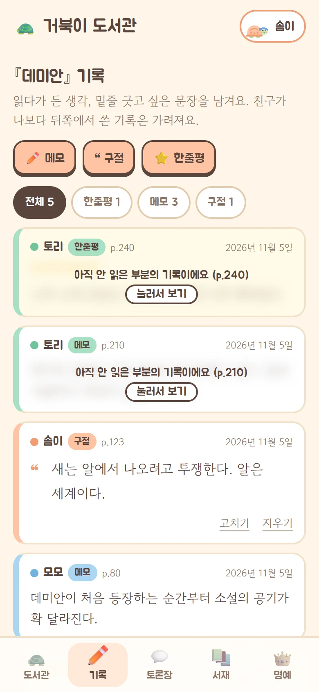
"이 부분 좋았지"에서 끝나지 않도록, 서로 생각이 갈리는 질문을 순서대로 준비해 뒀어요.
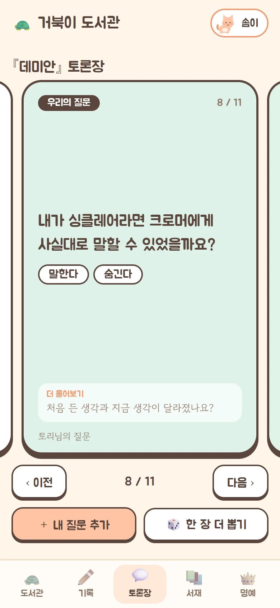
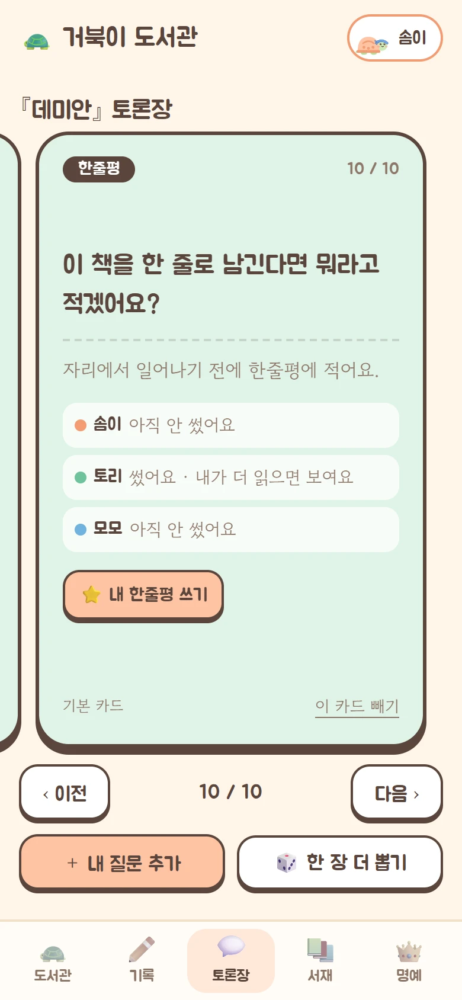
[남는다 / 떠난다]처럼 적으면 고르는 선택지가 돼요.혼자 읽는 책도 등록해서 어디까지 읽었는지 기록해요. 책을 누르면 그 책의 메모와 구절을 남길 수 있어요.
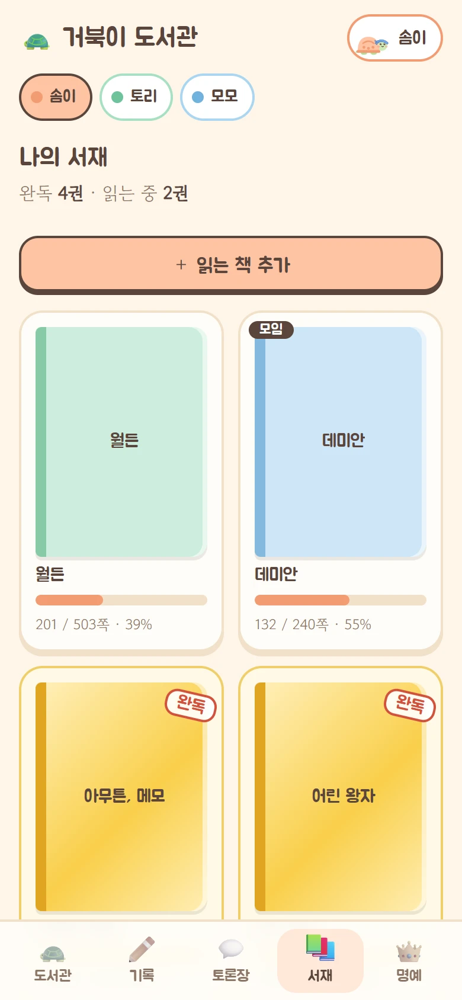
왕관은 책마다 새로 정해지지만, 여기 쌓인 횟수는 지워지지 않아요.
오른쪽 위 내 이름을 눌러 "내 정보"를 열고 이 기기에서 알림 켜기를 누르면 돼요. 알림은 기기마다 따로 켜요.
아이폰은 먼저 홈 화면에 추가해야 해요. Safari 에서 그냥 열면 알림을 켤 수 없고, 아래 방법으로 홈 화면에 추가한 뒤 그 아이콘으로 열어야 켜져요.
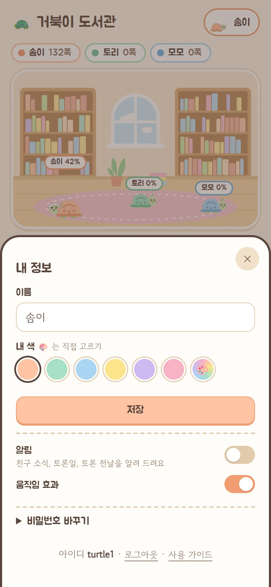
설치할 필요 없이, 홈 화면에 추가해 두면 앱처럼 열려요.
가입 화면이 없어요. 모임을 만든 친구가 계정을 만들어 전해 줘요. 들어온 뒤 오른쪽 위 "내 정보"에서 이름, 색, 비밀번호를 바꿀 수 있어요.
모임을 만든 친구에게 새 비밀번호를 받아야 해요. 비밀번호를 열 번 틀리면 10분 동안 잠겨요.
도서관 화면의 "날짜 다시 정하기"를 누르면 날짜가 취소되고, 모두 다시 확정해야 해요. 골라 둔 날짜는 남아 있어요.
화면은 30초마다, 그리고 앱으로 돌아올 때 새로 받아 와요. 알림을 켜 두면 소식이 올 때 바로 바뀌어요.
"내 정보"에서 알림이 켜져 있는지 보고 시험 알림 보내기를 눌러 보세요. 안 오면 폰 설정에서 이 앱(또는 브라우저)의 알림이 꺼져 있지 않은지 확인하고, 알림을 껐다가 다시 켜 보세요. 아이폰은 홈 화면에 추가한 아이콘으로 열어야 해요.
괜찮아요. 책이 넘어간 뒤에도 서재에서 그 책을 눌러 이어서 기록할 수 있어요. 다 읽으면 다독왕 권수에 들어가요.
모임을 만든 친구가 계정을 하나 더 만들면 돼요. 새 친구는 책 고르는 순번의 맨 뒤에 붙어요.